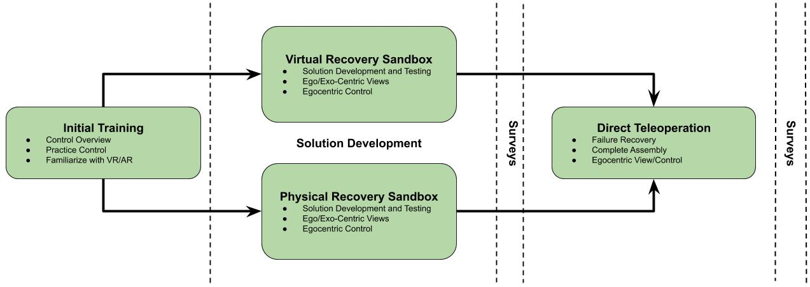

Lunar Telerobotic Assembly Research
Led a team of engineers creating robotic hardware and software for
research in advancement of the NASA proposed FARSIDE mission
 FARSIDE (Farside Array for Radio Science Investigations of the Dark Ages and Exoplanets)
mission. Using a COTS rover and robotic arm, we developed a Telerobotic Simulation System (TSS) for experiments assessing the risks and rewards of new technologies for low-latency telerobotic assembly tasks.
FARSIDE (Farside Array for Radio Science Investigations of the Dark Ages and Exoplanets)
mission. Using a COTS rover and robotic arm, we developed a Telerobotic Simulation System (TSS) for experiments assessing the risks and rewards of new technologies for low-latency telerobotic assembly tasks.
Human Factors Experiment
This experiment served to determine a methodology to accurately assess the situational awareness (SA) and cognitive load (CL) of an operator while performing telerobotic assembly tasks analogous to a robotic lunar mission. SA and CL along with task performance are critical metrics when assessing the effectiveness of a telerobotic system. The published work can be found
here.
Virtual Simulation Experiment
This work-in-progress presents and evaluates a new failure response method for planetary robots.
Motivation
NASA is creating a sustainable human-lunar presence which requires large scale robotic surface operations. Direct teleoperation of all lunar robots will be inefficient. Collaborative control is a more semi-autonomous model that incorporates human ingenuity during failure response.
Figure 1. Collaborative control flowchart. Robot is autonomous till it reaches a point of uncertainty. Human can provide robot with additional information or take direct control of robot.
In terms of the current failure response method for planetary rovers, the test rover for Curiosity is a prime example. NASA created a hardware duplicate of Curiosity which they use on Earth in a simulated Martian environment. This is a reasonable problem solving method for the martian rovers, however this method becomes very expensive and inefficient as the number of robots scales. The Gateway could provide infrastructure for large data transfer with minimal latency allowing for new failure response methods.
Research Objective 1: Analyze current technologies used in space to develop a new failure response method for robotic planetary assembly tasks
When developing a new failure response strategy, we wanted to leverage existing technologies currently on board rovers or other space systems.
Curiosity and Perseverance have 3D mapping capabilities which could be used to virtually recreate the rovers' environment.
The Dextre-Operated Camera
also leverages 3D mapping to inspect the ISS for damage.
Using these technologies, we can generate a virtual training environment in order to develop solutions to failures
This idea is promising because
previous research
has shown virtual training improves real world task performance.
Research Objective 2: Create a virtual recovery sandbox for problem solving assembly failures
Imagine a collaboratively controlled lunar robot performing an assembly task.
The robot would contact a human supervisor if in a failure mode.
Assuming the robot has a stereo camera, it could take a 3D scan of its environment to create a virtual sandbox.
Assembly objects would be marked and imported into the virtual sandox during the scan.
All unmarked objects will be assumed as terrain with uniform physical properties.
Lastly, a CAD model of the rover will imported into the sandbox.
The human supervisor can problem solve in this virtual sandbox without consequences.

Figure 2. Physical robot (left) in physical lunar sandbox. Virtual robot (right) in virtual lunar sandbox.
Research Objective 3: Compare the effectiveness of problem solving in a virtual sandox to a physical sandox
To accomplish this objective, we designed a between participants experiment with 2 conditions and 3 phases.

Figure 3. Purposed experimental design to assess the effectiveness of solution development in virtual reality.
During the phase, participants will learn and practice the system controls. Participants will complete a guided tutorial.terrain Then they must pass a test to move to the next phase.
Phase 2: Solution Development
After initial training, half of the participants will work in the virtual sandbox, and half will work in the physical sandbox. In this phase, the robot starts in a failure mode. The operator's goal is to devlop a method to quickly and accurately resolve the failure within 20 minutes. The operator may reset the sandbox to its initial condition as often as desired.
Phase 3: Direct Teleoperation
In this portion of the experiment, participants must employ the previously discovered solution to recover from the assembly failure via direct teleoperation of the physical robot and assembly hardware. The operator's goal is to recover from the failure as fast as possible with minimal resets. Time to completion and number of resets will be recorded.
Surveys
Participants will complete surveys before and after Phase 3 to assess cognitive load, situational awareness, and system usability.
Presentations, Abstracts, and Publications
IEEE Aerospace Conference 2020
A Methodology to Assess the Human Factors Associated with Lunar Teleoperated Assembly Tasks
Lunar Surface Workshop 2020
Telerobotic Assembly Research and Artemis Infrastructure to Enable the FARSIDE Mission
Lunar Graduate Conference 2020
Lunar Telerobotic Assembly Recovery Using Cyber-Physical Training
NASA Exploration Science Forum 2020
Implementing an Augmented Reality User Interface for Future Lunar Telerobotic Assembly Experiments
NASA Exploration Science Forum 2019
Low-Latency Telerobotic Assembly of a Low Frequency Radio Telescope on the Moon:
Establishing Baselines for User Situation Awareness and Cognitive Load
Media
ABC Action News: Students design robotic lunar rover that could give us deeper look into the universe
Reuters: Robots may beat humans back to the moon
Acknowledgements
Dr. Jack Burns - University of Colorado Boulder
Dr. Dan Szafir - University of Colorado Boulder
Mason Bell - University of Colorado Boulder
Phaedra Curlin - University of Colorado Boulder
Michael Walker - University of Colorado Boulder
Benjamin Mellinkoff - General Atomics
Alexander Sandoval - Ball Aerospace
Mike Drever - Lockheed Martin
NASA Solar System Exploration Research Virtual Institute
Network for Exploration and Space Science